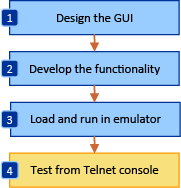
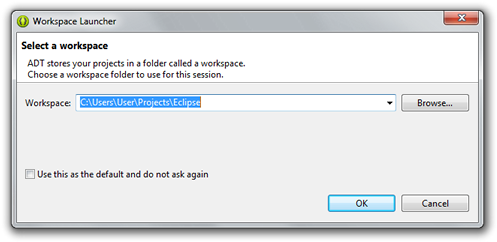
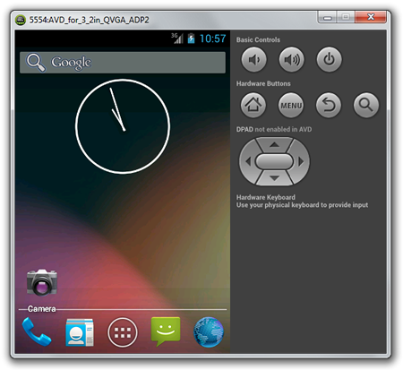
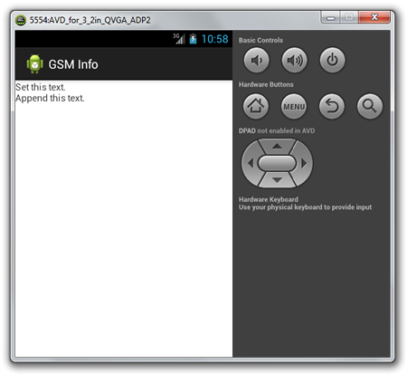
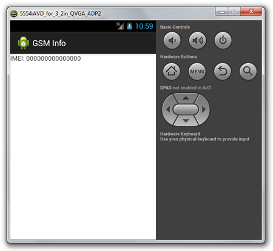

Alex Bikfalvi
- Home
- Teaching
- Pompeu Fabra University
- 2013
- Architecture and Signaling
- Lab
- Accessing GSM Functions on an Android Smartphone
Accessing GSM Functions on an Android Smartphone
Lab Overview
Goals
The objective of this practical exercise is to create an application for a smartphone with the Android mobile operating system, which can access the GSM functionality. To write our application, we shall use the Java programming language with the Eclipse integrated development environment (IDE).
Software Tools
During this lab, we shall use a customized version of the Eclipse platform, called Android Development Tools or ADT, which includes the functionality and the API to easily create applications for the Android OS. In addition, the software package includes an Android smartphone emulator, called Android Virtual Device or AVD, which we shall use to test our code.

Figure 1. The steps taken to design, develop and test an Android application.
The figure 1 illustrates the steps we take to create our application. The ADT makes it possible to perform all these steps from the same integrated environment.
Lab Assignment
This lab consists of two tasks.
- For the first, we develop a simple Android application that displays several static GSM parameters, such as subscriber and equipment identity numbers.
- For the second, we display sevaral dynamic GSM parameters, such as roaming indication and radio signal strength.
For evaluation, you should upload to Aula Global your code plus the answer to the lab questions, as a single archive file. The deadline is on February 22, 2013. The answers to questions is 60% of the final mark, uploaded code is 40% of the final mark.
Lab Steps
Step 1: Download / Open the Android Development Tools
Open or download the Android Development Tools from the following web site:
http://developer.android.com/sdk/index.htmlor from a link indicated by your instructor. Unpack the ADT in an empty folder.
Start the IDE by opening the eclipse program from the eclipse folder. When staring the IDE for the first time, you will be asked to select the folder where you want to store your Eclipse projects, as shown in the figure 2. You may choose the default or create a new folder for this purpose.

Figure 2. Selecting the default ADT workspace folder.
Step 2: Create an Android Application Project
- Create a new Android application project from the File > New > Android Application Project. Enter the application name such as
GsmInfoand the project package nameedu.upf.gsminfo. Click Next. - On the following wizard steps, you may use the default settings for configuring the project, selecting an icon, and creating a new activity. After the wizard completes, select Finish.
- After the new Android application project is created, the IDE displays the main activity or GUI of our application, called
activity_main.xmlif you selected the default settings. The activity can be visualized and edited in two different ways: as an XML file or using a graphical designer. You may switch between these different modes using the buttons from the bottom of theactivity_main.xmlframe, as shown in the figure 3.
Figure 3. Switching between the XML and the design mode of the Android activity.
Step 3: Test the Application in an Android Virtual Device
By default the Android application displays a simple Hello World! message. Now it is time to compile and test or application using the Android smartphone emulator, or AVD. For this purpose, we must create a new running configuration.- Select the Run > Run Configurations menu. A new dialog opens, where we can create a new running configuration.
- In the opened dialog, select Android Application from the left-hand side list, and the click on the New button.
- A new configuration is created, and the dialog displays three new tabs: Android, Target, and Common. In the Name field, you can select a different name for the configuration.
- In the Android tab, use the Browse button to select our current project, as the project to execute in this configuration.
- In the Target tab, we create and select a new Android Virtual Device to emulate the smartphone. Open the Android Virtual Device Manager, by clicking on the Manager button.
- In the manager, from the New button, create a new virtual device. Select a name, choose a device type of your own preference, and you may leave the remaining settings on their default values.
- After creating the device, and closing the manager, refresh the list of Android virtual devices used in the project configuration, and check the device we just created as the preferred one.
- Click Apply and then Run to begin running the application on the emulated device.
Step 4: Interacting with the Android Virtual Device
The Android Virtual Device or AVD, emulates an Android smartphone. When staring the virtual device for the first time, please be patient and wait for the device's operating system to load. Our Android application is automatically loaded, installed and started on the phone. A virtual keyboard allows us to interact with the phone, in addition to the mouse, which can be used to simulate the touching of the touch screen, as illustrated in the figure 4.

Figure 4. An Android Virtual Device (AVD) running on the local port 5444.
Because the Android Virtual Device emulates the behavior of a real life phone, it cannot be used to make or receive real life phone calls. However, this characteristic can be emulated as well, in order to test Android applications. For this purpose, the AVD allows a Telnet connection on a given local port. The port number is displayed in the title of the emulator window, and usually starts with 5554.
We can use putty as a Telnet client to connect to AVD, and send commands that will change the behavior of the emulated phone.
- Open putty and use the Telnet option to connect to the AVD on the specified port number.
- Once connected, a new text-line console appears, which we can use to send commands to the AVD, as shown below.
Android Console: type 'help' for a list of commands OK
- At any time, you can type
helpor?to display the commands available. - During this practice you shall use the
gsmcommand to simulate the behavior of a real-life GSM network. Type thegsmcommand in the console to display the list of the available options, as shown below:help gsm allows you to change GSM-related settings, or to make a new inbound phone call available sub-commands: gsm list list current phone calls gsm call create inbound phone call gsm busy close waiting outbound call as busy gsm hold change the state of an oubtound call to 'held' gsm accept change the state of an outbound call to 'active' gsm cancel disconnect an inbound or outbound phone call gsm data modify data connection state gsm voice modify voice connection state gsm status display GSM status gsm signal set sets the rssi and ber OK
- Test some of these commands, and observe the behavior of the phone. You may start each command with the
helpor?keywords to display additional options.
| Questions |
|---|
| What is the Telnet command to simulate an incoming telephone call? |
| What is the Telnet command to send an SMS to the virtual smartphone? |
Change the gsm voice setting to off and attempt to perform a phone call from the AVD. What happens? |
Step 5: Design the Application GUI
Return the Android Development Tools. Now, we shall design the GUI of our Android application, using the GUI designer. If you are an experienced Android developer, you may also edit your code in XML mode.
- First, remove the Hello World!
TextViewcomponent from the main activity. - From the components palette, on the left-hand side, open the Composite set, and click and drag a
ScrollViewcomponent to the activity window. We shall use this component to help us scroll through the text that we shall display later. Use the mouse to resize the scroll view component to fill the entire activity window. Then, in the component properties list, at the right-bottom side, set the componentIdto@+id/scrollView. - In the component Outline window, on the right-top side, select the
LinearLayoutof the scroll view. In the component properties, set the Layout Parameters > Height towrap_content. - Finally, we shall add a component where we can display text. To this end, go to the Form Widgets components set, and click and drag a
TextViewcomponent, on top of the previous scroll view. Resize the text view component to fill the entire activity screen. Change theIdto@+id/textView. Set the Layout Parameters > Height towrap_content. Set the Text property to an empty string. - Switch to the XML display of the activity user interface. The XML should be similar to the one displayed below. Alternatively, you may copy and paste this code into your XML file.
- Compile and test your application.
<RelativeLayout xmlns:android="http://schemas.android.com/apk/res/android" xmlns:tools="http://schemas.android.com/tools" android:layout_width="match_parent" android:layout_height="match_parent" tools:context=".MainActivity" > <ScrollView android:id="@+id/scrollView" android:layout_width="wrap_content" android:layout_height="wrap_content" android:layout_alignParentBottom="true" android:layout_alignParentLeft="true" android:layout_alignParentRight="true" android:layout_alignParentTop="true" > <LinearLayout android:layout_width="match_parent" android:layout_height="wrap_content" > <TextView android:id="@+id/textView" android:layout_width="match_parent" android:layout_height="wrap_content" /> </LinearLayout> </ScrollView> </RelativeLayout>
Step 6: Develop Your Code
The Android Development Tools IDE uses the user interface XML to automatically generate the Java code needed to interact with the GUI components. However, for each GUI component we want to access, we need to declare a corresponding variable in our code using the findViewById method.
- Open the Java code file MainActivity.java corresponding to our application. You can open the file using the Package Explorer, under the src > edu.upf.gsminfo package path.
- We need to add a package that allows us to declare a variable corresponding to the text view from the user interface.
import android.widget.TextView;
- We declare a new variable within the main class of our application, corresponding to the text view component.
public class MainActivity extends Activity { private TextView textView; ... }
- We add the remaining of the code for our application, to the
onCreatemethod, which is called every time the application is created.protected void onCreate(Bundle savedInstanceState) { ... }
- In this method, first we initialize the text view variable by using the component Id, declared previously with the user interface designer.
this.textView = (TextView)this.findViewById(R.id.textView);
- To display a text on the user interface, we can set or append a string to the text view component using any of the following methods. To display text, we shall add a new
onStartmethod, such that the text is updated every time we open the application.protected void onStart() { super.onStart(); ... this.textView.setText("Set this text.\n"); ... this.textView.append("Append this text.\n"); }
- Test your application. You should see your application, similar to the one displayed in the figure 5.

Figure 5. Displaying a string in the Android application.
Lab Tasks
Display Static GSM Parameters
We use the android.telephony package to read and display the GSM parameters. The key Java class to achieve this objective is called TelephonyManager, which features a large set of methods that we can use.
- Open the Android API documentation in your browser at the following URL: http://developer.android.com/reference/android/telephony/TelephonyManager.html. Use it to determine which methods return GSM parameters that could be of our interest.
- To access the telephony service on an Android phone, first, we must create an instance (that is an object) of the
TelephonyManagerclass. To do this, we create a new variable at the beginning of the class, as shown below.private TelephonyManager telephonyManager;
- Then, we create the class instance, by adding the following line of code in the
onCreatemethod.this.telephonyManager = (TelephonyManager) this.getSystemService(TELEPHONY_SERVICE);
- Now, we can use the newly created telephony manager to display GSM parameters for our smarthphone. For example, we can display the IMEI (International Mobile Equipment Identity number) by calling the
getDeviceIdmethod, as shown below. We use atry--catchstatement to prevent the application crashing if the telephony manager throws an exception. - Test now your application. When successful, your application should look like in the figure 6.

Figure 6. Displaying the IMEI in the Android application.
| Questions |
|---|
| Does the application display the IMEI? Was any change required? |
| What other methods do you know for displaying the IMEI of a mobile phone? |
| Tasks |
|---|
| Display the phone type. What method do you use? What does the value mean? |
| Display the IMEISV. What method do you use? What value do you obtain? |
| Display the network type. What method do you use? What does the value mean? |
| Display the call state. What method do you use? What does the value mean? |
| Display the IMSI. What method do you use? |
| Display the MSISDN. What method do you use? |
| Display the SIM serial. What method do you use? |
| Which is mobile country code of the current subscriber? Which is its mobile network code? How do you find it? |
| Which is mobile country code of the current registered operator? Which is its mobile network code? Are the MCC and MNC of the subscriber equal to the ones of the current operator? Why? How can you change them? Test your application and note the results. |
Display Dynamic GSM Parameters
In this task, we shall dynamically display GSM parameters, such as changes of the phone or network state. To this end, we shall use the PhoneStateListener class. Check out the API documentation to become familiar to this class, how you can use it, and what information it provides.
- First, open the Android API documentation in your browser at the following URL: http://developer.android.com/reference/android/telephony/PhoneStateListener.html Use it to determine which methods return GSM parameters that could be of our interest.
- Second, we need to create a new class, which extends
PhoneStateListenerand overrides its methods. We shall call this classListener, for simplicity, and we shall declare it within our main class, as shown below. This class shall receive notifications when the GSM parameters change. To write to the GUI text view, we add a localTextViewvariable, which we initialize via the class constructor.public class MainActivity extends Activity { ... private class Listener extends PhoneStateListener { ... private TextView textView; public Listener(TextView textView) { this.textView = textView; } ... } ... }
- Next, we declare a new variable for our newly created
Listenerclass, within the main class.public class MainActivity extends Activity { ... private Listener listener; ... }
- Then, we create a new instance of this class, in the
onCreatemethod.protected void onCreate(Bundle savedInstanceState) { ... this.listener = new Listener(); ... }
- To receive notifications when GSM parameters change, we must inform the telephony manager of the type of event which we want to receive. These are listed as constants of the
PhoneStateListenerclass. We enable the listening, using the code below. As shown in the example, to listen to multiple events at the same time, we separate them by pipe (|).protected void onCreate(Bundle savedInstanceState) { ... this.telephonyManager.listen(this.listener, PhoneStateListener.LISTEN_CALL_STATE | PhoneStateListener.LISTEN_DATA_ACTIVITY); ... }
- Now, we have to implement the methods inside the listener class, to receive the data for the parameters we want to process. For example, if we want to listen on the
LISTEN_DATA_ACTIVITYevent, we shall implement theonDataActivitymethod, as follows.private class Listener extends PhoneStateListener { ... public void onDataActivity(int direction) { this.textView.append("Data activity: " + direction + "\n"); } ... }
| Questions |
|---|
| What are the 9 phone state parameters that we can follow using this class? Use the API documentation for help. |
| Tasks |
|---|
| Create a method to listen and display the call state. What value do you obtain? What does it mean? |
| Use the Telnet console to make a call. Does anything change? How? |
| Create a method to listen and display the service state. What information can you display? |
| Use the Telnet console to change the voice or data GSM state. Does anything change? How? |
| Bonus Tasks |
|---|
| Create a method to listen and display the signal strength. What information can you display? |
| Use the Telnet console to change the signal strength and observe what changes. No need to write anything for this point. |
| What do the numbers in the signal strength information mean? What is the equivalent signal strength in dBm for the numeric value you obtain? Tip: Use the 3GPP standard TS 27.007 section 8.5, to answer this question}. |
Published: Febrary 21, 2013
Last updated: February 21, 2013